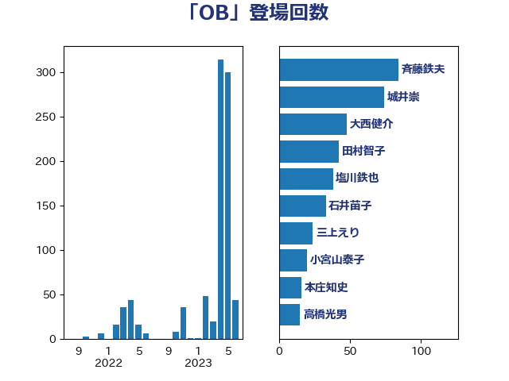

単語「OB」

| 斉藤鉄夫 | 公明党 | 84 回 |
| 城井崇 | 立憲民主党 | 74 回 |
| 大西健介 | 立憲民主党 | 48 回 |
| 田村智子 | 日本共産党 | 42 回 |
| 塩川鉄也 | 日本共産党 | 38 回 |
| 石井苗子 | 日本維新の会 | 33 回 |
| 三上えり | 立憲民主党 | 24 回 |
| 小宮山泰子 | 立憲民主党 | 20 回 |
| 本庄知史 | 立憲民主党 | 16 回 |
| 高橋光男 | 公明党 | 15 回 |
| 森屋隆 | 立憲民主党 | 13 回 |
| 山岸一生 | 立憲民主党 | 13 回 |
| 水野素子 | 立憲民主党 | 11 回 |
| 東徹 | 日本維新の会 | 11 回 |
| 小西洋之 | 立憲民主党 | 11 回 |
| 音喜多駿 | 日本維新の会 | 10 回 |
| 落合貴之 | 立憲民主党 | 10 回 |
| 松野博一 | 自由民主党 | 10 回 |
| 鬼木誠 | 立憲民主党 | 9 回 |
| 美延映夫 | 日本維新の会 | 9 回 |
| 河野太郎 | 自由民主党 | 9 回 |
| 福島伸享 | 無所属 | 8 回 |
| 柚木道義 | 立憲民主党 | 8 回 |
| 梅谷守 | 立憲民主党 | 7 回 |
| 松本剛明 | 自由民主党 | 7 回 |
| 岸田文雄 | 自由民主党 | 7 回 |
| 前川清成 | 日本維新の会 | 7 回 |
| 野田国義 | 立憲民主党 | 6 回 |
| 足立康史 | 日本維新の会 | 6 回 |
| 和田有一朗 | 日本維新の会 | 6 回 |
| 保岡宏武 | 自由民主党 | 6 回 |
| おおつき紅葉 | 立憲民主党 | 6 回 |
| 馬淵澄夫 | 立憲民主党 | 5 回 |
| 鎌田さゆり | 立憲民主党 | 5 回 |
| 鈴木義弘 | 国民民主党 | 5 回 |
| 蓮舫 | 立憲民主党 | 5 回 |
| 神谷裕 | 立憲民主党 | 5 回 |
| 浜口誠 | 国民民主党 | 5 回 |
| 斎藤洋明 | 自由民主党 | 5 回 |
| 市村浩一郎 | 日本維新の会 | 5 回 |
| 神津たけし | 立憲民主党 | 4 回 |
| 石川大我 | 立憲民主党 | 4 回 |
| 小沢雅仁 | 立憲民主党 | 4 回 |
| 野田佳彦 | 立憲民主党 | 3 回 |
| 遠藤良太 | 日本維新の会 | 3 回 |
| 田島麻衣子 | 立憲民主党 | 3 回 |
| 打越さく良 | 立憲民主党 | 3 回 |
| 後藤茂之 | 自由民主党 | 3 回 |
| 井上哲士 | 日本共産党 | 3 回 |
| 高木宏壽 | 自由民主党 | 2 回 |
| 長浜博行 | 無所属 | 2 回 |
| 金子道仁 | 日本維新の会 | 2 回 |
| 角田秀穂 | 公明党 | 2 回 |
| 西銘恒三郎 | 自由民主党 | 2 回 |
| 西村康稔 | 自由民主党 | 2 回 |
| 萩生田光一 | 自由民主党 | 2 回 |
| 芳賀道也 | 国民民主党 | 2 回 |
| 羽田次郎 | 立憲民主党 | 2 回 |
| 緒方林太郎 | 無所属 | 2 回 |
| 磯崎仁彦 | 自由民主党 | 2 回 |
| 田村まみ | 国民民主党 | 2 回 |
| 片山さつき | 自由民主党 | 2 回 |
| 浅川義治 | 日本維新の会 | 2 回 |
| 泉健太 | 立憲民主党 | 2 回 |
| 江田憲司 | 立憲民主党 | 2 回 |
| 永岡桂子 | 自由民主党 | 2 回 |
| 榛葉賀津也 | 国民民主党 | 2 回 |
| 根本幸典 | 自由民主党 | 2 回 |
| 木原誠二 | 自由民主党 | 2 回 |
| 斎藤アレックス | 国民民主党 | 2 回 |
| 小熊慎司 | 立憲民主党 | 2 回 |
| 小沼巧 | 立憲民主党 | 2 回 |
| 寺田稔 | 自由民主党 | 2 回 |
| 大塚耕平 | 国民民主党 | 2 回 |
| 勝部賢志 | 立憲民主党 | 2 回 |
| 伴野豊 | 立憲民主党 | 2 回 |
| 井出庸生 | 自由民主党 | 2 回 |
| たがや亮 | れいわ新選組 | 2 回 |
| 齋藤健 | 自由民主党 | 1 回 |
| 青島健太 | 日本維新の会 | 1 回 |
| 階猛 | 立憲民主党 | 1 回 |
| 阿部司 | 日本維新の会 | 1 回 |
| 長谷川英晴 | 自由民主党 | 1 回 |
| 長友慎治 | 国民民主党 | 1 回 |
| 野間健 | 立憲民主党 | 1 回 |
| 野村哲郎 | 自由民主党 | 1 回 |
| 篠原豪 | 立憲民主党 | 1 回 |
| 石川博崇 | 公明党 | 1 回 |
| 白石洋一 | 立憲民主党 | 1 回 |
| 田名部匡代 | 立憲民主党 | 1 回 |
| 渡辺周 | 立憲民主党 | 1 回 |
| 清水貴之 | 日本維新の会 | 1 回 |
| 浜田靖一 | 自由民主党 | 1 回 |
| 浅田均 | 日本維新の会 | 1 回 |
| 河野義博 | 公明党 | 1 回 |
| 武井俊輔 | 自由民主党 | 1 回 |
| 櫻井周 | 立憲民主党 | 1 回 |
| 村田享子 | 立憲民主党 | 1 回 |
| 杉本和巳 | 日本維新の会 | 1 回 |
| 杉尾秀哉 | 立憲民主党 | 1 回 |
| 末松義規 | 立憲民主党 | 1 回 |
| 新妻秀規 | 公明党 | 1 回 |
| 岬麻紀 | 日本維新の会 | 1 回 |
| 山田太郎 | 自由民主党 | 1 回 |
| 山添拓 | 日本共産党 | 1 回 |
| 山本博司 | 公明党 | 1 回 |
| 尾身朝子 | 自由民主党 | 1 回 |
| 寺田学 | 立憲民主党 | 1 回 |
| 宮路拓馬 | 自由民主党 | 1 回 |
| 宮本岳志 | 日本共産党 | 1 回 |
| 奥下剛光 | 日本維新の会 | 1 回 |
| 太栄志 | 立憲民主党 | 1 回 |
| 大野泰正 | 自由民主党 | 1 回 |
| 大岡敏孝 | 自由民主党 | 1 回 |
| 坂本哲志 | 自由民主党 | 1 回 |
| 吉田統彦 | 立憲民主党 | 1 回 |
| 北神圭朗 | 無所属 | 1 回 |
| 倉林明子 | 日本共産党 | 1 回 |
| 伊藤俊輔 | 立憲民主党 | 1 回 |
| 伊波洋一 | 無所属 | 1 回 |
| 伊佐進一 | 公明党 | 1 回 |
| 井坂信彦 | 立憲民主党 | 1 回 |
| 井原巧 | 自由民主党 | 1 回 |
| 中川貴元 | 自由民主党 | 1 回 |
| 世耕弘成 | 自由民主党 | 1 回 |
| 上野賢一郎 | 自由民主党 | 1 回 |
| 上田清司 | 国民民主党 | 1 回 |
| 三谷英弘 | 自由民主党 | 1 回 |
| ながえ孝子 | 無所属 | 1 回 |